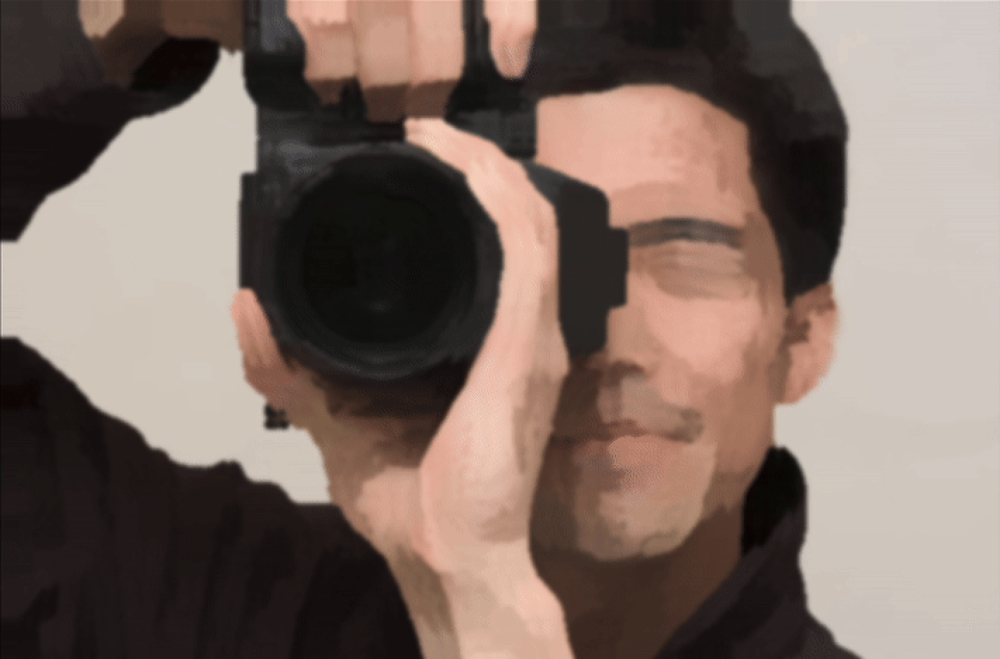
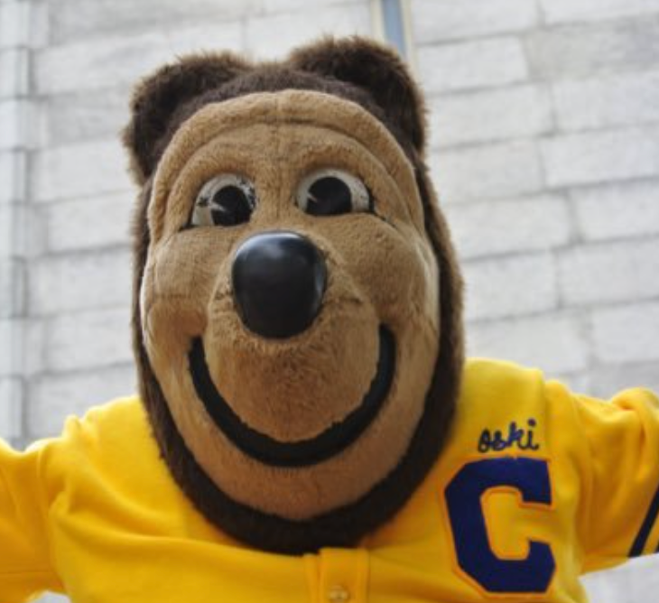
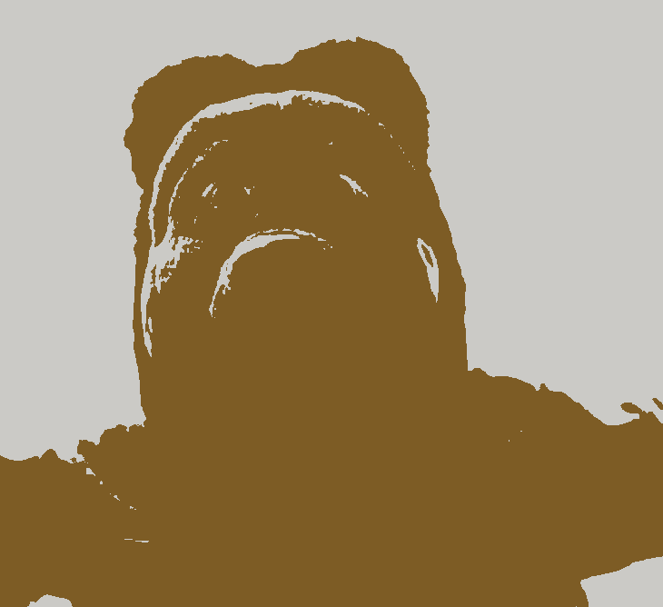
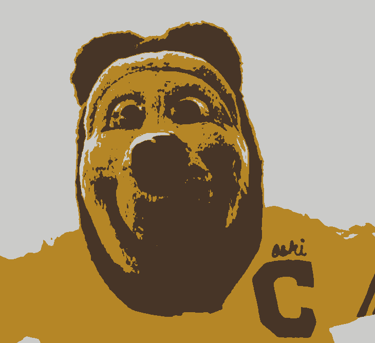
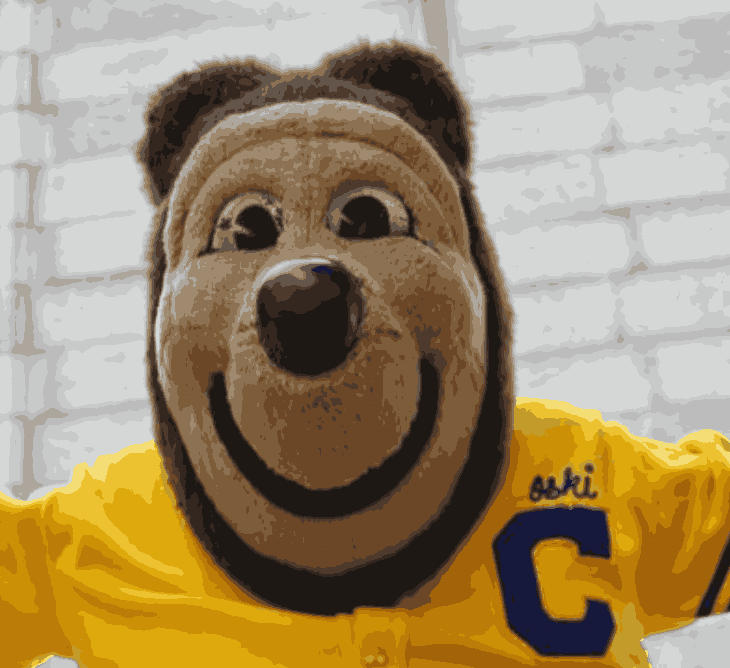

Paint-by-numbers and coloring books have played a large role in upbringing of many children, including ourselves. Remembering hours spent in coloring in images, we aim to create a paint-by-numbers generator. Users can pass in any image they want and our code will generate a paint-by-numbers that users can color in. This project requires a number of processing steps: we first smooth out the image, then cluster the image by color, and transfer this information into a user interface.
The processing of images in our interface can be separated into five main sections: Kuwahara filtering, Gaussian blurring, K-means clustering, Region Clustering / Color Segmentation, and Texture Painting. Kuwahara filtering and Gaussian blurring smooth out input images to remove fine detail and create a simpler framework. K-means clustering is used to determine the color palette of the paint-by-numbers by segmenting the image into k clusters, corresponding to k colors. Region clustering creates separate contiguous regions of the same color. And textured painting creates unique and visually interesting patterns.
We first apply a Kuwahara filter. This filter is commonly used to modify an image into one that looks painted rather than realistic. We can utilize it to smooth images, reduce noise, and remove fine details: having too many details detracts from the simplicity of paint-by-numbers.
The following steps are repeated for all pixels (converted to HSV color space):
We ran into two main issues during this process: 1) speed and 2) aliasing.
Our original Kuwahara filter ran too slowly, especially for an interactive webpage. Thus, instead of iterating through every pixel, we performed Kuwahara filtering on every other pixel and then upsampled this result to get the final output. We get a large improvement in speed for a small tradeoff in accuracy. For the stylized and simplistic result we want, losing some accuracy is fine.
A common issue with Kuwahara filters is the presence of block artifacts, which is emphasized because we skip every other pixel. The Kuwahara-filtered example below shows signs of aliasing.
To smooth out these artifacts, we decided to perform a Gaussian blur (next section).
By implementing this Kuwahara filter, we learned to generate unique effects in images. It’s interesting to use math in creative ways to produce results that don’t initially seem intuitive
|
|
|
We compared results from using Gaussian blur before and after the Kuwahara filter. We realized that using a Gaussian filter before Kuwahara filtering did not work because the results were still blocky due to the inherent nature of a Kuwahara filter: blurring would have to occur after the filter to actually smooth out the blocks from the Kuwahara filtering.
Gaussian blur works by convolving an image with a Gaussian function. In this project, we implemented Gaussian blur with two passes:
Through the process of implementing the Gaussian filter, we learned practical ways to implement anti-aliasing and how to solve real problems with image rendering.
|
|

|
After the Kuwahara Filter and Gaussian Blur are applied to the image, we use K-Means Clustering. The K-Means algorithm is used to group similar data points into clusters. In our application, the pixel’s RGB values act as the data points, as we aim to segment the image into k clusters or color groups. The algorithm works as follows:
|

|

|
|

|

|
We referenced K-Means pseudocode in implementing this algorithm, adapting the algorithm to use the RGB values as data points. Additionally, centroid initialization and max_iterations had a significant impact on the implementation of this algorithm. Initially, the centroids were initialized as the first k-pixel values, which did not accurately reflect the colors across the whole image, impacting run time. Furthermore, upon switching to randomly initializing k centroids, the final results of the algorithm varied heavily if max_iterations was too low, as the algorithm terminated before converging. Implementing the K-Means algorithm helped us practice making a program robust and consistent.
|
|
|
Following the K-means, we cluster contiguous regions of the same color into separate “paintable” regions. This is an essential part of our system because we want the user to interact with coherent spatial regions rather than individual pixels.
To accomplish this, we perform a flood-fill-based region extraction:
One challenge we faced was the presence of many tiny regions. These could be due to noise, compression, or just small details in the image. These small regions were visually distracting and made user interaction cumbersome. To address this, we introduced a merging step:
Finally, for each region, we also precompute a set of border pixels, defined as those with at least one neighbor outside the region. These are used for visual outlines and region selection in the UI.
Lastly, we provide an interactive user interface that allows users to color in the segmented image using a paint-by-numbers simulation. Built with React and HTML5 Canvas, the UI is structured to provide intuitive interaction while strictly enforcing the region boundaries determined during region clustering. The interface uses three stacked canvas elements:
Upon mouse click, if no region is selected, the system checks whether the click falls within any region by looking up the pixel’s coordinates in the precomputed region maps. If the user clicks inside a valid region, that region becomes "selected," and only that region can be painted on.
To implement this, all drawing operations are masked using a pixel-level filter. Before painting, a hidden canvas is used to draw the stroke as if there were no constraints. Then, using the selected region's pixel map, only the pixels within the region are transferred back to the main canvas. This process is repeated for every stroke, preventing any stroke from bleeding into adjacent regions.
In normal drawing mode, we implemented a smooth round brush. The thickness of the brush is user-adjustable via a slider or numeric input. When the user clicks, a circle with the radius of the brush stroke is drawn. However, mouse events were not quick enough to drag out a continuous line. To fix this, when the user holds down the mouse button and moves the cursor, the system interpolates between the current and previous cursor positions to form a smooth stroke, which is rendered as a line (via ctx.lineTo) with round line caps.
We ran into some lag spikes implementing this technique, so we optimized by only redrawing within a bounding box surrounding the stroke, which minimizes canvas processing overhead.
Additional usability features include:
Initially, the painting style used a solid flood fill that colors every pixel. To add more creativity, we explored how to add texture to mimic different brush styles. Our first attempt involved applying a set pattern. When the user selects a region, the program would fill in pixels using a pattern mask. However, the visuals generated using this method felt quite predictable and dull.
We ultimately pivoted to a different technique, simulating brush bristles by painting many little dots. At each timestep, the program knows the mouse's previous and current position. We randomly generate many little dots between these two positions, using linear interpolation to fill in the gaps. The number of dots is determined by dividing the distance moved by the brush width, such that the brush stroke is smooth while not being laggy. This makes painting more unique, as the user can repeatedly paint over the same area to make it darker and filled in, like layering on real paint. The result of this method is a brush style that is much more textured and realistic, similar to spray paint.
We have implemented a pipeline to go from a user-inputted image to a final paint-by-numbers interface using the techniques described above. The image processing flow is shown in the below graphic.
This has been streamlined through one system, and each intermediate step is shown below in this animation:
Our interface is intuitive, aesthetic, and a lot of fun to use. The many UI features and textured painting styles help the user to create beautiful paintings.
As a benchmark, we can compare our results to other paint-by-number generators found online. Shown below is an example of an online paint-by-numbers generator (where the user has manually selected colors to cluster by). Adjustments could be made to perhaps simplify and smoothen our results moving forward, but our interface seems to perform at a comparable level and provides a working interactive experience for users.